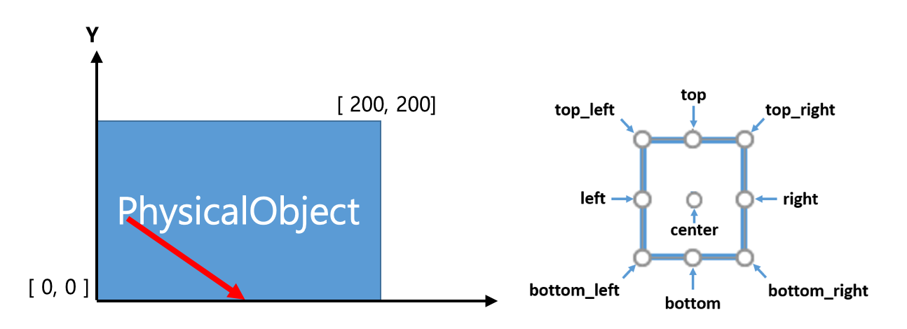
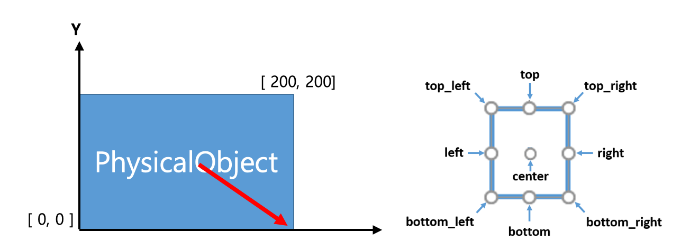
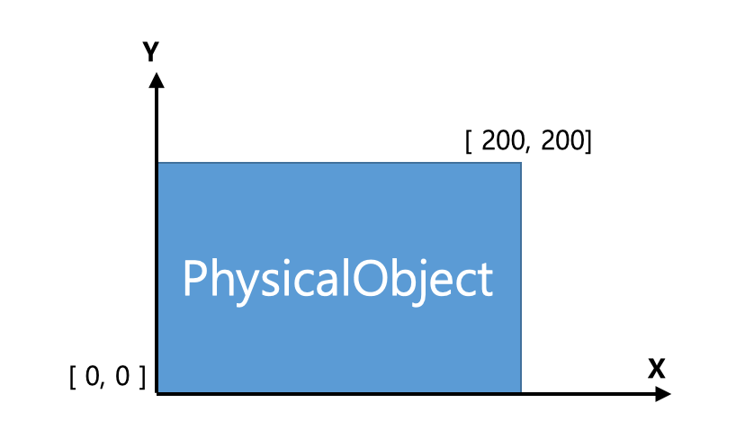
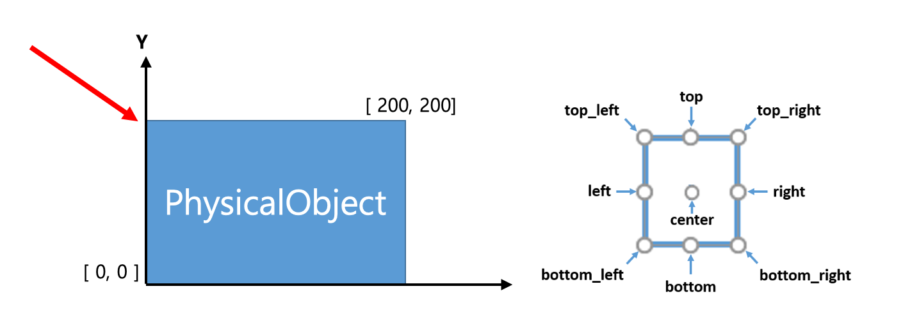

Text class#
- class laygo2.object.physical.Text(xy, layer, text, name=None, params=None)[source]#
Bases:
laygo2.object.physical.PhysicalObjectText object class.
Example
>>> import laygo2 >>> text0 = laygo2.object.physical.Text(xy=[0, 0], layer=['text', 'drawing'], text='test', params=None) >>> print(text0) <laygo2.object.physical.Text object at 0x000002049A77FD90> name: None, class: Text, xy: [0, 0], params: None, layer: ['text', 'drawing'], text: test
Notes
(Korean): Text 객체 클래스.
Public Data Attributes:
The physical layer information of the object,
Text content of the object.
Inherited from
PhysicalObjectObject name.
Retrive x,y coordinate values of the object.
Master ojbect for current object (for arrays and pins).
Dictionary storing the parameters associated with the object
The dictionary containing the key-value pairs of the major physical coordinates of the object, such as 'left', 'right', 'top', 'bottom', 'bottom_left', 'center', etc.
The left-center coordinate of the object.
The right-center coordinate of the object.
The top-center coordinate of the object.
The bottom-center coordinate of the object.
The center-center coordinate of the object.
The bottom-left coordinate of the object.
The bottom-right coordinate of the object.
The top-left coordinate of the object.
The top-right coordinate of the object.
The physical bounding box of the object.
Public Methods:
__init__(xy, layer, text[, name, params])The constructor function.
Get object information summary.
Inherited from
PhysicalObject__init__(xy, layer, text[, name, params])The constructor function.
__str__()Return the summary of the object information.
Get object information summary.
- __init__(xy, layer, text, name=None, params=None)[source]#
The constructor function.
- Parameters
xy (numpy.ndarray) – Physical coordinate values of the object in the form of [bottom_left, top_right].
layer (list) – The physical layer information of the object, represented as a list with two elements: [name, purpose].
text (str) – The text content.
name (str) – Object name.
params (dict) – Dictionary storing the parameters associated with the object.
- Return type
See also
PhysicalObjectbase class.
Example
>>> import laygo2 >>> text0 = laygo2.object.physical.Text(xy=[0, 0], layer=['text', 'drawing'], text='test', params=None) >>> print(text0) <laygo2.object.physical.Text object at 0x000002049A77FD90> name: None, class: Text, xy: [0, 0], params: None, layer: ['text', 'drawing'], text: test
Notes
(Korean): Text 클래스의 생성자 함수.
- 파라미터
xy(numpy.ndarray): 객체의 물리적 좌표, bbox.
layer(list): 객체의 layer 정보.
text(str): 텍스트 내용.
name(str): 객체의 이름.
params(dict): 객체의 주요 속성을 갖는 dict.
- _get_xy()#
numpy.ndarray(dtype=numpy.int): Retrive x,y coordinate values of the object.
- _set_xy(value)#
numpy.ndarray(dtype=numpy.int): Update x,y coordinates of the object.
- _update_pointers()#
The internal function that updates the object’s pointers after a change in its physical coordinates.
- _xy = array([0, 0])#
The x and y coordinate values stored within.
- Type
numpy.ndarray(dtype=numpy.int)
- property bbox#
The physical bounding box of the object.
Example
>>> import laygo2 >>> obj = laygo2.object.physical.PhysicalObject(xy = [[0, 0], [200, 200]]) >>> obj.bbox array([[ 0, 0], [200, 200]])
Notes
(Korean): numpy.ndarray: 객체의 bbox (bounding box).
- Type
- bottom = None#
The bottom-center coordinate of the object.
Example
>>> import laygo2 >>> obj = laygo2.object.physical.PhysicalObject(xy = [[0, 0], [200, 200]]) >>> obj.top array([100, 0])
- Type
- bottom_left = None#
The bottom-left coordinate of the object.
Example
>>> import laygo2 >>> obj = laygo2.object.physical.PhysicalObject(xy = [[0, 0], [200, 200]]) >>> obj.bottom_left array([ 0, 0])
- Type
- bottom_right = None#
The bottom-right coordinate of the object.
Example
>>> import laygo2 >>> obj = laygo2.object.physical.PhysicalObject(xy = [[0, 0], [200, 200]]) >>> obj.bottom_right array([200, 0])
- Type
- center = None#
The center-center coordinate of the object.
Example
>>> import laygo2 >>> obj = laygo2.object.physical.PhysicalObject(xy = [[0, 0], [200, 200]]) >>> obj.center array([100, 100])
- Type
- layer = None#
- The physical layer information of the object,
represented as a list with two elements: [name, purpose].
Example
>>> import laygo2 >>> text0 = laygo2.object.physical.Text(xy=[0, 0], layer=['text', 'drawing'], text='test', params=None) >>> text0.layer ['text', 'drawing']
Notes
(Korean): 객체의 layer 정보 [name, purpose].
- Type
- left = None#
The left-center coordinate of the object.
Example
>>> import laygo2 >>> obj = laygo2.object.physical.PhysicalObject(xy = [[0, 0], [200, 200]]) >>> obj.left array([ 0, 100])
- Type
- master = None#
Master ojbect for current object (for arrays and pins).
Example
>>> import laygo2 >>> obj1 = laygo2.object.physical.PhysicalObject(xy = [[0, 0], [200, 200]], name="test1", params=None) >>> obj2 = laygo2.object.physical.Pin(xy = [[0, 0], [100, 100]], layer = ["M1", "drawing"], master=obj1) >>> obj2.master <laygo2.object.physical.PhysicalObject object at 0x00000204AAF3C7C0>
Notes
(Korean): 객체의 master (배열 element 또는 pin 객체들의 master 객체에 연결).
- Type
- name = None#
Object name.
Example
>>> import laygo2 >>> obj = laygo2.object.physical.PhysicalObject(xy = [[0, 0], [200, 200]], name="test", params={'maxI': 0.005}) >>> obj.name “test”
- Type
- params = None#
Dictionary storing the parameters associated with the object
Example
>>> import laygo2 >>> obj = laygo2.object.physical.PhysicalObject(xy = [[0, 0], [200, 200]], name="test", params={'maxI': 0.005}) >>> obj.params {‘maxI’: 0.005 }
Notes
(Korean): 객체의 속성.
- Type
- pointers = None#
The dictionary containing the key-value pairs of the major physical coordinates of the object, such as ‘left’, ‘right’, ‘top’, ‘bottom’, ‘bottom_left’, ‘center’, etc.
Example
>>> import laygo2 >>> obj = laygo2.object.physical.PhysicalObject(xy = [[0, 0], [200, 200]]) >>> obj.pointers {'left': array([0, 100]), 'right': array([200, 100]), 'bottom': array([100, 0]), 'top': array([100, 200]), 'bottom_left': array([0, 0]), 'bottom_right': array([200, 0]), 'top_left': array([0, 200]), 'top_right': array([200, 200]), ‘center’: array( [100, 100] ) }
Notes
(Korean): 객체의 주요 좌표들을 담고 있는 dictionary.
- Type
- right = None#
The right-center coordinate of the object.
Example
>>> import laygo2 >>> obj = laygo2.object.physical.PhysicalObject(xy = [[0, 0], [200, 200]]) >>> obj.right array([200, 100])

- Type
- text = None#
Text content of the object.
Example
>>> import laygo2 >>> text0 = laygo2.object.physical.Text(xy=[0, 0], layer=['text', 'drawing'], text='test', params=None) >>> text0.text 'test'
Notes
(Korean): 객체의 텍스트 내용.
- Type
- top = None#
The top-center coordinate of the object.
Example
>>> import laygo2 >>> obj = laygo2.object.physical.PhysicalObject(xy = [[0, 0], [200, 200]]) >>> obj.top array([100, 200])
- Type
- top_left = None#
The top-left coordinate of the object.
Example
>>> import laygo2 >>> obj = laygo2.object.physical.PhysicalObject(xy = [[0, 0], [200, 200]]) >>> obj.top_left array([ 0, 200])
- Type
- top_right = None#
The top-right coordinate of the object.
Example
>>> import laygo2 >>> obj = laygo2.object.physical.PhysicalObject(xy = [[0, 0], [200, 200]]) >>> obj.top_right array([200, 200])
- Type
- property xy#
Retrive x,y coordinate values of the object.
- Type
numpy.ndarray(dtype=numpy.int)
{kind=link}
{kind=link}
{kind=link}
{kind=link}
{kind=link}
{kind=link}
{kind=link}
{kind=link}
{kind=link}
{kind=link}
{kind=link}